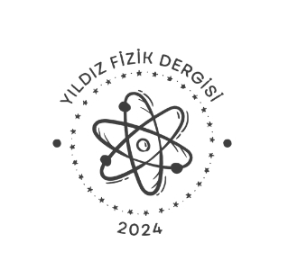
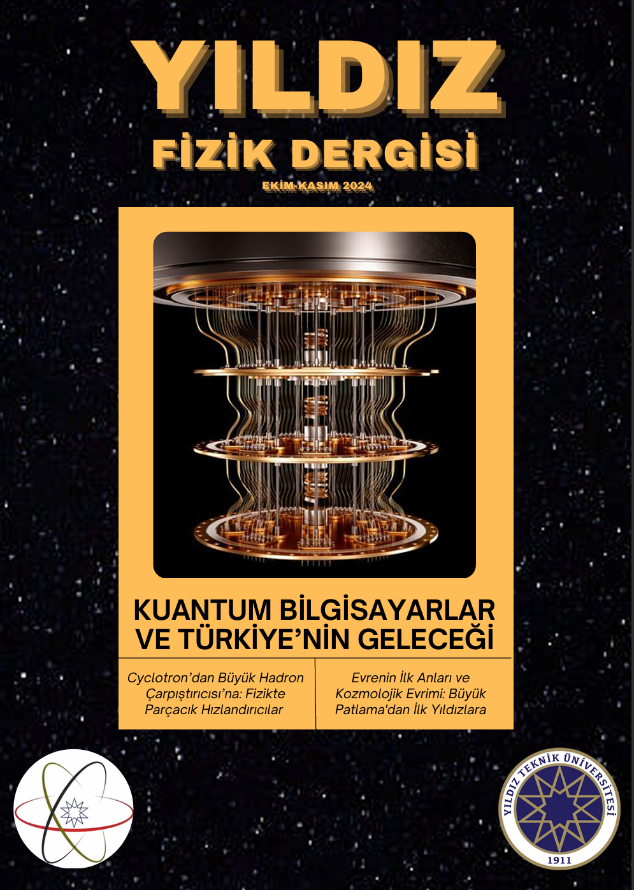

Yıldız Fizik Dergisi
Yıldız Quark Topluluğu
Yayımlanan Sayılar

Sayı 01:
Yayımlanma: Kasım 2024
Sayı 02:
Yayımlanma: Mart 2025
Sayı 03:
Yayımlanma: Kasım 2025
Sayı 04:
Yayımlanma: mart 2025
Sayı 03:
Yayımlanma: Kasım 2026
Biz Kimiz & Amacımız
kkk
kkk